Perform ancestral rites in Africa, we use this type of Macumba to ward off enemies from your path forever.
Perform ancestral rites in Africa, we use this type of Macumba to ward off enemies from your path forever.
Payment to APUS is an old Inca ritual practiced to enjoy the protection of them in our lives.
payment to the Pachamama this ritual where the land is devoted to the purpose of paying good fortune and success to come. His practice is ancient and traditional.
Even today practiced by knowledgeable and experienced teachers in many parts of Peru and Bolivia. Giordano and Verenice visit and see it yourself.. There are many sensitive people who quickly absorb any evil and witchcraft and sorcery brought protect yourself with the rituals of white magic protection.


Palmistry and quirología are based on the fact that you can know the personality, health and past events through the traces left on the palms of the hands, the shape of the fingers, nails, from the mountains that form under the birth of the fingers, etc.
Palmistry aims, through this knowledge gained from reading hands divine the future destiny of the person.
We perform healings and cures in Santeria table which is surrounded by miraculous saints.
Laying on of hands to heal any kind of disease or illness without medical diagnosis, unknown to human science, but known to the ancient occult and magic.
You. One must have faith and confidence in ourselves and in our ancestral knowledge. We will prepare the path that will take you to your full happiness. Take our hands that will not allow you to follow in the anguish of seeing your relationship lost, destroyed your home, your business, your future. We will show you that anything is possible with faith and conviction.
Santa Muerte protects you and cares for all damage and obstacle that comes your way as their power is extremely large. Trust ...
The velomancia is a study in forecasting practices, sailing through the fall and drop flame movement is interpreted. It is a type of divination as it could be the oracle. It is something very concrete that serves solely to specific questions. At other times it can also be used as a complementary to any other ritual or offering element.
It is always more productive for example a spread with a candle and accompanying energy, works as a supplement.

The crucifix is considered by the Catholic tradition as a defense against demonic forces, and the sacred sign of Christ over evil as the winner.
Old records in grimoires of Magic, on the effective protection of the crucifix before the most evil sorcery have.
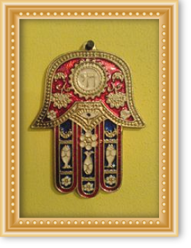
The Khamsa or Hamsa, also known as the Hand of Fatima or Miriam shown with the shape of the palm and is widely used in the Middle East and the Maghreb countries of North Africa.
The Hand of Fatima is mainly used as jewelry or hung on doors and windows to ward off the evil eye.
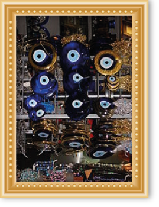
Nazar is a protective amulet against the "evil eye" or bad intentions that others may wish us. It is used worldwide especially in Turkey, Iran and Greece.
You can find it in colguijes decoration or clothing and accessories. Some people refer to this talisman also as "Blue Eye"

The omamori, of Japanese origin, is an amulet for protection against evil. Omamori word means protection.
It is made of fabric and inside paper or pieces of wood with parcels or written wishes are sanctified. It is said to be unlucky and find open omamori inside.
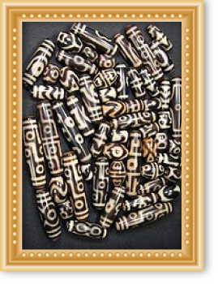
Agate carved in stone, these amulets are of ancient origin and are used in necklaces and bracelets and are considered as carriers of spiritual benefit.
Tibetan cultures covered with medicinal powder which adheres to its reliefs to convey his benefactor power.
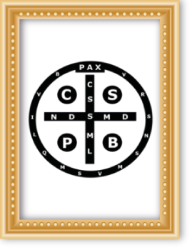
Catholic medals, including the Vade Retro Satana including the formula to ward off Satan are very popular and have even been used abaladas by Pope Benedict XVI.
The Vade Retro Satana is a charm that is also used by the human voice. Mention the words alienate the devil and exorcism is used in practice.
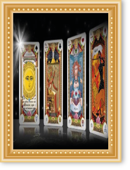
Mystical Letters protect its wearer according to the four universal astrological elements are air (which represents knowledge and wisdom), Earth (leading fertility and prosperity result of our work), Water (which controls our emotions and gives birth to our beauty) and the Fire (which protects us from the evil intentions and gives us strength and courage to face any situation.
The Mystic Cards can be used with spells or take with Letters for protection.
Place them under the pillow will answer questions through our dreams.
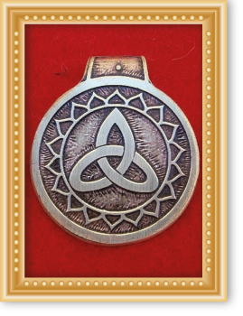
It is proved that the talismans are spiritual tools that help convert negative energy into positive energy. This causes a flushing action that re invigorates stagnant and negative energy, and becomes fresh and positive energy. Talismans as orgone are made of organic resin and inorganic metal shavings.
Other powerful talismans are those containing quartz crystals, powerful material to clean energy and storing intentions. In addition, there are other gemstones that influence the properties of talismans. Any gemstone will have a powerful effect on the wearer, as they are high-energy devices.
Examples of powerful talismans
Turquoise
- This stone is a powerful, multipurpose ranging from healing to enhance creativity
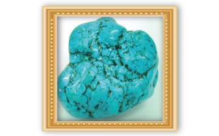
Black tourmaline
- This stone repels the negative psychic energy and keeps you grounded
.
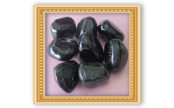
Hematite
- Similar to the black tourmaline, also helps boost self-confidence
.
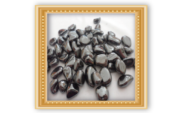
rose quartz Rhodochrosite and
- To attract romantic love
.
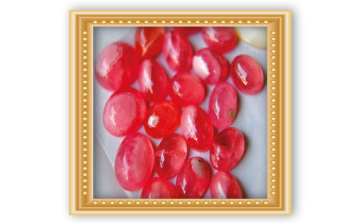
Lapis Lazuli
- To increase your psychic powers and give spiritual clarity. Very useful when working with home spells.
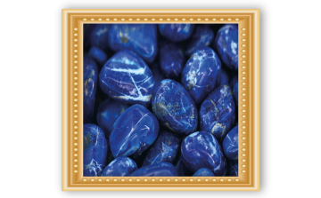
Garnet
- It attracts money, increase business success and relieves depression
.
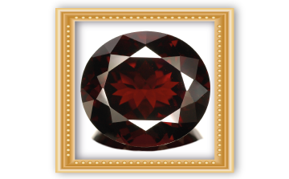
orgone pendants and charms can help you increase your magical powers as positive energy around you.
LINKS OF INTEREST:
http://petitabruixa.blogspot.pe/2006/06/baos-con-sal-limpieza-y-proteccin.html
http://contemplandoelvacio.blogspot.pe/2012/07/limpieza-energetica-del-huevo_24.html
http://tagomago.galeon.com/aficiones1988819.html